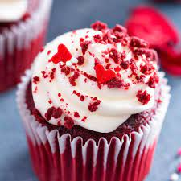

Red Velvet Cupcakes

I really can't take credit for this recipe, since not only am I getting the contents from All Recipes.com,
But I'm even getting this description...
This mini version of the classic Red Velvet Cake is one of the more popular offerings in bakeries all across the country. Whip up a batch this holiday season or anytime of the year.
Ingredients
- 2 1/2 cups flour
- 1/2 cup unsweetened cocoa powder
- 1 teaspoon baking soda
- 1/2 teaspoon salt
- 1 cup butter, softened
- 2 cups sugar
- 4 large eggs
- 1 cup sour cream
- 1/2 cup milk
- 1 (1 oz.) bottle McCormick Red Food Color
- 2 teaspoons McCormick Pure Vanilla Extract
Vanilla Cream Cheese Pudding:
- 1 (8 oz.) package cream cheese, softened
- 1/4 cup butter, softened
- 2 tablespoons sour cream
- 2 teaspoons McCormick Pure Vanilla Extract
- 1 (16 oz.) box confectioners' sugar
Steps
- Preheat oven to 350 degrees F. Mix flour, cocoa powder, baking soda and salt in medium bowl. Set aside.
- Beat butter and sugar in large bowl with electric mixer on medium speed 5 minutes or until light and fluffy.
Beat in eggs, one at a time. Mix in sour cream, milk, food color and vanilla. Gradually beat in flour mixture on low speed until just blended.
Do not overbeat. Spoon batter into 30 paper-lined muffin cups, filling each cup 2/3 full.
- Bake 20 minutes or until toothpick inserted into cupcake comes out clean. Cool in pans on wire rack 5 minutes.
Remove from pans; cool completely. Frost with Vanilla Cream Cheese Frosting.
- Vanilla Cream Cheese Frosting: Beat cream cheese, softened, butter, sour cream and McCormick® Pure Vanilla Extract
in large bowl until light and fluffy. Gradually beat in confectioners' sugar until smooth.
Return to homepage